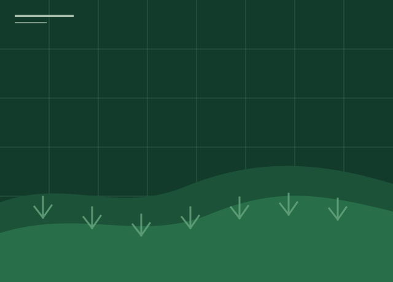
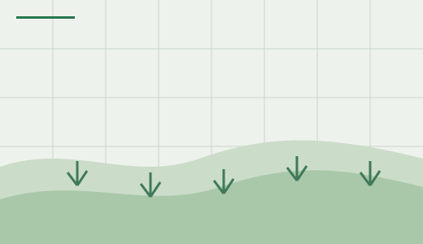

01 / Collect
Measure the field
Soil pH, moisture, temperature and humidity come from the ESP32 node; rainfall comes from the weather source.
IoT and AI decision support / Kenya
Soil and weather readings feed a trained model that recommends the crops best suited to your farm. The system advises; the final decision stays with you.

Enter the seven model inputs and receive a ranked result with confidence.
Open prediction 02 — FarmsCreate and manage the plots whose location drives weather and advice.
Open farms 03 — DevicesRegister sensors, issue device keys and submit a field reading batch.
Open devices 04 — AccountSign in, update your details and manage the current access token.
Open account 05 — SystemCheck the API banner and health endpoint before relying on a result.
Open status 06 — APIInspect the exact endpoints, payloads and coverage owned by this frontend.
Open referenceSoil pH, moisture, temperature and humidity come from the ESP32 node; rainfall comes from the weather source.
The server checks the reading, builds the model input and runs the trained classifier.
You see the leading crop, its confidence and two alternatives, plus a clear low-confidence warning when needed.

Recommendations are decision support, not a planting guarantee. Confirm with local soil tests, seasonality, water availability and extension advice.